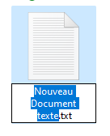
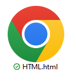
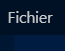
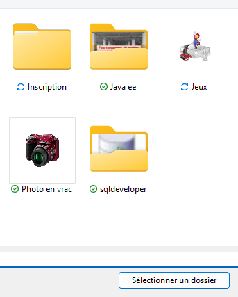
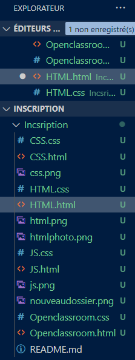
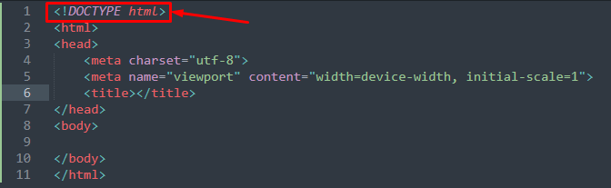

Le HTML est un langage de code qui permet de faire apparaître tout ce que l'on veut voir sur un site Web. Du texte, des images, des audios ainsi que des vidéos.Pour ce faire, tout ce que vous voulez voir apparaître doivent se trouver dans des balises. La balise ouvrante < > et la balise fermante < / > . Mais avant de pouvoir se servir des balises il faut d'abord créer un nouveau dossier . Ensuite ouvrez ce dossier est créer un nouveau fichier:
Il faut renommer ce dossier en . html.
Ouvrir ensuite un éditeur de code (ici j'utilise VSC visual studio code). Cliquez sur fichier
Cliquez ensuite sur ouvrir le dossier
Et sélectionner votre dossier et cliquez sur sélectionner votre dossier
Une fois que toutes ces manipulations sont faites, vous verrez apparaître sur le côté gauche tout vos fichiers qu'il soit HTML ou CSS (que vous créerez de la m^me façon que celui du fichier HTML) sauf que celui ci sera .css et non . html ainsi que toutes les photos, vidéos ou audio que vous voudrez voir sur votre site Web.
Une fois que toutes ces étapes ont été faites, vous pouvez commencer à créer votre site Web.
Ceux qui travaillent avec des documents HTML connaissent déjà . Bien qu’il ne fasse pas partie des tags HTML classiques, devrait être placé en première position dans les documents HTML. Avant même le texte source proprement dit, DOCTYPE indique quel type de document le navigateur devra ouvrir et quelle syntaxe et grammaire de code est utilisée. Bien que cette balise compte parmi les éléments les plus importants du document HTML, elle est souvent oubliée. Comme sa présence est devenue une condition préalable, il ne faut pas oublier de marquer le type de document pour chaque page avec . Les bons éditeurs HTML proposent un contrôle d’erreur qui signale les lignes DOCTYPE manquantes.
Le rôle de doctype en HTML est d’expliquer au premier coup d’œil aux programmeurs et aux navigateurs de quelle document type définition (DTD) il s’agit et comment un site Web doit être rendu. La DTD indique quel langage de code est utilisé sur la page ou dans le document HTML. Cela s’applique par exemple aux fichiers en HTML, XHTML, SVG, MathML ou XML. Si vous souhaitez créer votre propre site Web et apprendre le HTML, vous devrez donc commencer par insérer < ! doctype html >. L’absence de l’indicateur doctype peut entraîner un affichage incorrect des sites Web. La raison en est que les navigateurs passent automatiquement en « mode Quirks » lorsque < ! doctype html > manque. Cela permet de préserver la compatibilité et la représentabilité des sites Web sans norme de code actualisée. Mais en même temps, un code valide peut également entraîner un affichage incorrect, car certains navigateurs s’en tiennent à des éléments de code obsolètes et invalides.
Avant de commencer le code à proprement parler il nous faut un doctype de base. L'avantage avec VSC est que si toutes les étapes on bien été appliquées il n'y a pas besoin de tout retaper, il suffit de taper sur la touche point d'exclamation et sur la touche entrée pour que le doctype de base s'installe autiomatiquement. Voici à quoi ressemble le doctype de base:
Maintenant que le doctype de base est prêt vous pouvez commencer à mettre les balises. Attention celle-ci doivent être situées entre la balise body.